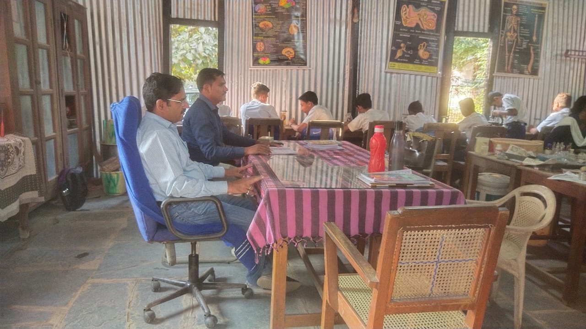
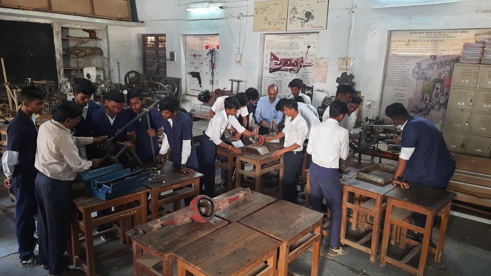
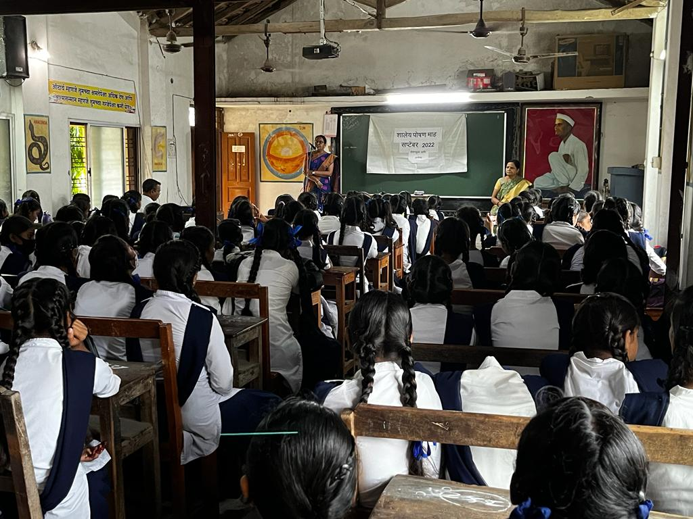
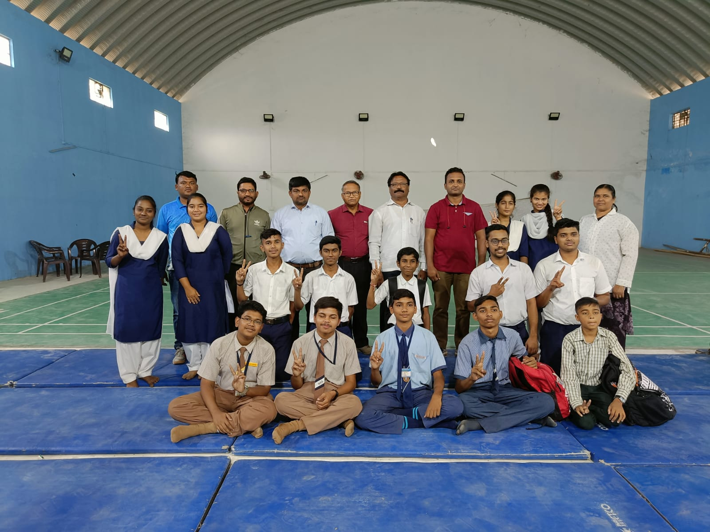
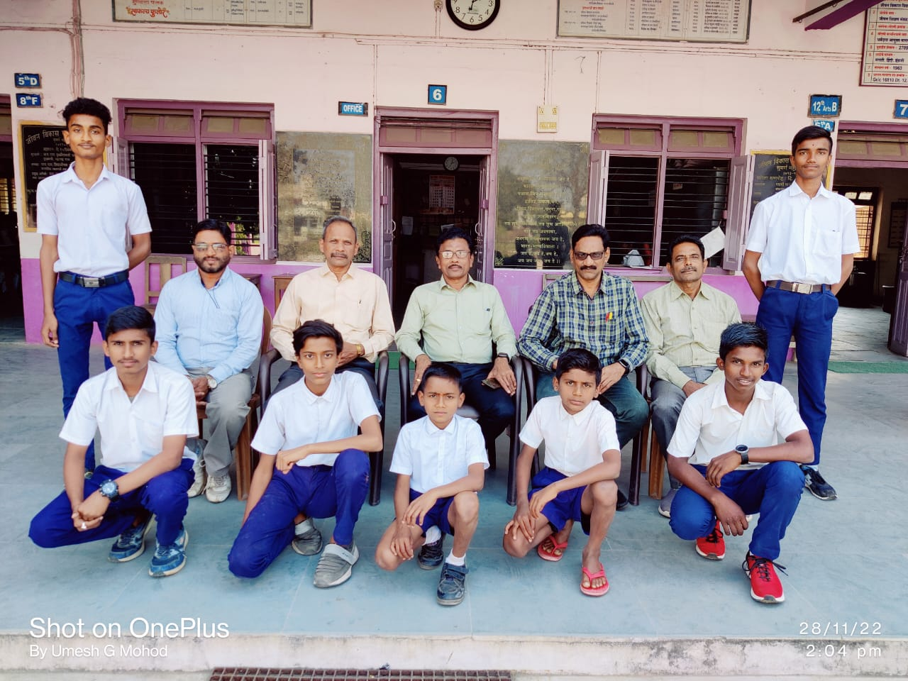

1. Science Faculties
a. Physics Section
Physics is the natural science that studies matter, its fundamental
constituents, its motion and behavior through space and time, and the related entities of energy and
force. Physics is one of the most fundamental scientific disciplines, with its main goal being to
understand how the universe behaves. A scientist who specializes in the field of physics is called a
physicist.
b. Chemistry Section
Chemistry is the scientific study of the properties and behavior of matter.
It is a natural science that covers the elements that make up matter to the compounds made of atoms,
molecules and ions: their composition, structure, properties, behavior and the changes they undergo
during a reaction with other substances. Chemistry also addresses the nature of chemical bonds in
chemical compounds.
c. Biology Section

Biology is the scientific study of life. It is a natural science with a broad scope but has several unifying themes that tie it together as a single, coherent field. For instance, all organisms are made up of cells that process hereditary information encoded in genes, which can be transmitted to future generations.
d. Our Library
A library is a collection of materials, books or media that are accessible for use and not just for display purposes. A library provides physical (hard copies) or digital access (soft copies) materials, and may be a physical location or a virtual space, or both. A library's collection can include printed materials and other physical resources in many formats such as DVD, CD and cassette as well as access to information, music or other content held on bibliographic databases.
e. Computer Science Lab
Computer science is the study of computation, automation, and information. Computer science spans theoretical disciplines (such as algorithms, theory of computation, information theory, and automation) to practical disciplines (including the design and implementation of hardware and software). Computer science is generally considered an area of academic research and distinct from computer programming.
2. Arts Faculties
The arts are a very wide range of human practices of creative
expression, storytelling and cultural participation. They encompass multiple, diverse and plural modes
of
thinking, doing and being, in an extremely broad range of media. Both highly dynamic and a
characteristically constant feature of human life, they have developed into innovative, stylized and
sometimes intricate forms. This is often achieved through sustained and deliberate study, training
and/or theorizing within a particular tradition, across generations and even between civilizations.
3. HSCVC
Minimum Competency Vocational Courses, now also known as HSC
Vocational Courses It gives students the opportunity to pursue vocational courses in the same amount of
time, instead of doing traditional eleventh and twelfth course after the tenth, which significantly
increases their job and self-employment chances. So if seen in this way, now students who have passed
the tenth have got the option of HSCVC course in addition to plus two-course, ITI course, and diploma
course. Another good thing about the HSCVC course is that in this, students get the option of many types
of branches.
a. Automobile Technology

Automotive engineering, along with aerospace engineering and
naval architecture, is a branch of vehicle engineering, incorporating elements of mechanical,
electrical, electronic, software, and safety engineering as applied to the design, manufacture and
operation of motorcycles, automobiles, and trucks and their respective engineering subsystems. It also
includes modification of vehicles. Manufacturing domain deals with the creation and assembling the whole
parts of automobiles is also included in it. The automotive engineering field is research intensive and
involves direct application of mathematical models and formulas.
b. Chemistry Section
Accounting, also known as accountancy, is the measurement, processing, and communication of financial and non-financial information about economic entities such as businesses and corporations.[1][2] Accounting, which has been called the "language of business",[3] measures the results of an organization's economic activities and conveys this information to a variety of stakeholders, including investors, creditors, management, and regulators.[4] Practitioners of accounting are known as accountants. The terms "accounting" and "financial reporting" are often used as synonyms.
4. Primary Education

Primary education or elementary education is typically the first stage of
formal education, coming after preschool/kindergarten and before secondary school. Primary education
takes place in primary schools, elementary schools, or first schools and middle schools, depending on
the location. The International Standard Classification of Education considers primary education as a
single-phase where programmes are typically designed to provide fundamental reading, writing, and
mathematics skills and establish a solid foundation for learning.
5. Sports
a. Chess

Chess is a board game between two players. It is sometimes called
international chess or Western chess to distinguish it from related games, such as xiangqi (Chinese
chess) and shogi (Japanese chess). The current form of the game emerged in Spain and the rest of
Southern Europe during the second half of the 15th century after evolving from chaturanga, a similar but
much older game of Indian origin. Today, chess is one of the world's most popular games, played by
millions of people worldwide.
b. Kabaddi
Kabaddi is a contact team sport. Played between two teams of seven
players, the objective of the game is for a single player on offence, referred to as a "raider", to run
into the opposing team's half of the court, touch out as many of their players and return to their own
half of the court, all without being tackled by the defenders in 30 seconds. Points are scored for each
player tagged by the raider, while the opposing team earns a point for stopping the raider. Players are
taken out of the game if they are touched or tackled, but are brought back in for each point scored by
their team from a tag or a tackle.
c. Judo

Judo (Japanese: 柔道, Hepburn: Jūdō, lit. 'gentle way') is an unarmed
modern Japanese martial art, Olympic sport (since 1964), and the most prominent form of jacket wrestling
competed internationally.[3][4][5] Judo was created in 1882 by Kanō Jigorō (嘉納 治五郎) as an eclectic
martial art, distinguishing itself from its predecessors (primarily Tenjin Shinyo-ryu jujutsu and
Kitō-ryū jujutsu) due to an emphasis on "randori" (乱取り, lit. 'free sparring') instead of "kata"
(pre-arranged forms) alongside its removal of striking and weapon training elements.
d. Mallakhamb
Mallakhamba or mallakhamb is a traditional sport, originating from the
Indian subcontinent, in which a gymnast performs aerial yoga or gymnastic postures and wrestling grips
in concert with a vertical stationary or hanging wooden pole, cane, or rope. The word "mallakhamb" also
refers to the pole used in the sport. The pole is usually made from sheesham (Indian rosewood) polished
with castor oil. Three popular versions of Mallakhamb are practiced using a sheesham pole, cane, or
rope.


.jpg)